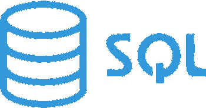

Umiejętności
Wzorce Projetkowe: strategia, dekorator, obserwator.

Podgrupy języka SQL: DDL,DML,DQL.
 HTML5, CSS
HTML5, CSS polecenia, pisanie skryptów w bashu.
polecenia, pisanie skryptów w bashu. obsługa za pomocą przeglądarki jak i komend z poziomu linii poleceń Git-Bash.
obsługa za pomocą przeglądarki jak i komend z poziomu linii poleceń Git-Bash.Kontakt
 Adam Górski
Adam Górski
GitHub
Adam Górski